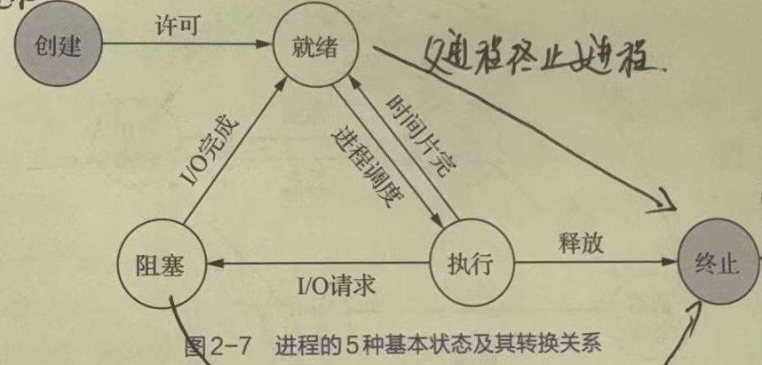

计算机操作系统
操作系统引论
- OS 的定义：操作系统是一组能有效地组织和管理 计算机硬件和软件资源 ，合理地对各类作业进行 调度 ，以及方便 用户使用 的程序的集合
- 发展过程中几个比较重要的基本系统
- 未配置操作系统的计算机系统
- 单道批处理系统
- 多道批处理系统，提高资源利用率和系统吞吐量
- 分时系统，人机交互
- 实时系统
- 硬实时
- 软实时
- 周期
- 非周期
- 微机操作系统
- 嵌入式操作系统
- 网络操作系统
- 分布式操作系统
- 基本特性
- 并发
- 在一段时间内宏观上有多个程序在同时运行
- 并发与并行的区别：并行是指两个或多个事件在同一时刻发生
- 共享
- 互斥共享方式
- 打印机、磁带机等
- 同时共享方式
- 磁盘等
- “同时”是宏观意义上的概念，实际上、微观上对其的访问是交替进行的。如磁盘磁头一次只能读写一个位置，同一时刻不可能响应多个进程
- 互斥共享方式
- 虚拟
- 时分复用技术
- 虚拟机处理技术
- 虚拟设备技术
- 空分复用技术
- 时分复用技术
- 异步
- 进程是以人们不可预知的速度向前推进的
- 并发
- 操作系统的主要功能
- 处理机管理功能
- 进程控制
- 进程同步
- 进程通信
- 调度
- 存储器管理功能
- 内存分配和回收
- 内存保护
- 地址映射
- 内存扩充
- 设备管理功能
- 缓冲管理
- 设备分配
- 设备处理
- 文件管理功能
- 文件存储空间管理
- 目录管理
- 文件的读/写保护
- 接口管理功能（2020 年 · B 卷）
- 用户接口
- 程序接口
- 处理机管理功能
- 操作系统的结构
- 微内核结构
- 特点
- 足够小的内核
- 基于客户/服务器模式
- 采用策略与机制分离原则
- 采用面向对象技术
- 基本功能
- 进程管理
- 低级存储器管理
- 中断和陷入处理
- 优点
- 提高了系统可扩展性
- 增强了系统可靠性
- 增强了系统可移植性
- 提供了对分布式系统的支持
- 融入了面向对象技术
- 特点
- 微内核结构
- 操作系统的运行环境
- 为什么要引入内核态和用户态：为了确保 OS 的正确运行，防止 OS 和用户程序受到错误用户程序的影响，必须区分 OS 代码和用户代码的执行
- 内核态/管态/系统态，特权指令
- 用户态/目态，非特权指令
- 什么时候发生用户态到内核态的转变：当用户程序通过 系统调用 请求 OS 服务时，系统就必须切换状态
- 为什么要引入内核态和用户态：为了确保 OS 的正确运行，防止 OS 和用户程序受到错误用户程序的影响，必须区分 OS 代码和用户代码的执行
进程的描述与控制
前趋图与程序执行
- 前趋图：有向无环图（DAG），用于描述进程之间执行的先后顺序。
- 程序顺序执行的特征：顺序性、封闭性、可再现性
- 程序并发执行的特征：间断性、失去封闭性、不可再现性（失去封闭性导致失去可再现性）
进程的描述
- 进程：进程是程序的执行过程，是系统进行资源分配和调度的一个独立单位。又称为重型进程。
- 进程是一个可拥有资源的独立单位
- 进程是一个可被独立调度和分派的基本单位
- 进程的基本状态：
- 总图：
- 就绪态：进程已处于准备好执行的状态。即进程已分配到除 CPU 以外的所有必要资源后，只要再获得 CPU，便可立即执行
- 执行态：进程获得 CPU 后，其程序“正在执行”这一状态
- 阻塞态：正在执行的进程，由于发生某事件而暂时无法执行。此时会引发进程调度，OS 会把处理机分配给另一个就绪态的进程
- 创建态：在创建进程的过程中，进程所需的资源系统尚不能满足，此时创建工作尚未完成，进程不能被调度运行的状态

- 终止态：当一个进程到达了自然结束的终点，或是出现了无法克服的错误，或是被 OS 所终止，或是被其他有终止权的进程所终止时的状态

- 进程的挂起操作和进程状态的转换
- 引入的挂起原语和激活原语

- 引入的挂起原语和激活原语
- 进程管理中的数据结构（PCB）
- PCB 中的信息
- 进程标识符：外部标识符、内部标识符
- 处理机状态
- 进程调度信息
- 进程控制信息
- 组织方式
- 线性方式
- 链接方式
- 索引方式
- PCB 中的信息
进程的控制
- 创建
- 引起进程创建的事件
- 用户登陆
- 作业调度
- 提供服务
- 应用请求
- 引起进程创建的事件
- 终止
- 引起进程终止的事件
- 正常结束
- 异常结束
- 外界干预
- 引起进程终止的事件
- 阻塞与唤醒
- 引起进程阻塞或唤醒的事件
- 向系统请求共享资源失败
- 等待某种操作的完成
- 新数据尚未到达
- 等待新任务到达
- 引起进程阻塞或唤醒的事件
- 挂起与激活
进程通信
- 定义：进程之间的信息交换。有低级和高级之分。
- 通信类型
- 共享存储器系统
- 管道通信系统
- 消息传递系统
- 客户机-服务器系统
- 实现方式
- 直接通信
- 间接通信/信箱通信
- 信箱的结构
- 信箱头
- 信箱体
- 信箱通信原语
- 创建、撤销
- 发送（
send(mailbox, message)）、接收（receive(mailbox, message)）
- 信箱的类型
- 私用信箱
- 公用信箱
- 共享信箱
- 信箱的结构
线程的概念
- 线程：是程序的执行过程，是系统进行资源分配和调度的一个比进程更小的基本单位。又称为轻型进程。
- 引入线程的动机
- 由于进程是资源分配单位，因而在创建、终止、切换的过程中，系统必须为之付出较大的时空开销
- 多处理器（Multiprocessor）系统和多核处理器（Chip Multi-processor，CMP）系统的引入对传统的进程模型带来挑战。在传统的操作系统中，进程是单线程的，单线程意味着进程内部必须是顺序执行，不能并发——即在一个时刻只能运行在一个处理器上，因此不能充分利用多处理器和多核处理器计算机的优势
- 现实中有很多需要并发处理的任务，如字处理程序、Web服务器字处理程序（例如Word）
- 引入线程的优缺点
- 优点
- 创建、终止、切换线程花费时间少
- 适合多处理机系统
- 减小并发执行的时间和空间开销(线程的创建、退出和调度)，因此容许在系统中建立更多的线程来提高并发程度
- 因为同一进程内的线程共享内存和文件，因此它们之间相互通信无须调用内核
- 缺点
- 在程序设计模型中引入了某种程度的复杂性
- 一个线程的崩溃可能影响到整个进程的稳定性
- 线程能够提高的总性能有限，并且线程多了之后，线程本身的调度也更加复杂，需要消耗较多的CPU资源
- 优点
- 线程的三个状态
- 执行态
- 就绪态
- 阻塞态
- 挂起状态对线程没有意义，如果进程挂起后被对换出主存，则它的所有线程因共享了进程的地址空间，也必须全部对换出去，所以挂起状态是进程级状态，不作为线程级状态。类似地，进程的终止会导致所有线程的终止
- 线程管理中的数据结构：线程控制块（TCB），TCB可能属于操作系统空间，也可能属于用户进程空间，这取决于线程的实现方式。 TCB 包含
- 程标识符
- 一组寄存器
- 线程执行状态
- 优先级
- 线程专有存储区
- 信号屏蔽
- 堆栈指针
- 进程和线程的区别
- 调度方面（根本区别）：在传统的操作系统中，拥有资源的基本单位和独立调度、分派的基本单位都是进程，在引入线程的OS中，则把线程作为调度和分派的基本单位，而把进程作为资源拥有的基本单位
- 并发性：引入线程的OS中，进程可以并发执行，相同、不同进程中的线程均可以并发执行
- 拥有资源：进程是操作系统资源分配的基本单位，线程几乎不拥有资源，允许同进程的线程，共享同进程的资源
- 独立性：同一进程的不同线程的独立性，要比不同进程之间的低得多
- 系统开销：在创建/撤销/切换进程时，系统要为它分配/回收/切换PCB和其它资源，远大于线程创建/撤销/切换的开销
- 支持多处理机：引入线程后，可以方便地支持多处理机系统
- 资源开销：每个进程都有独立的代码和数据空间（程序上下文），程序之间的切换会有较大的开销；线程可以看做轻量级的进程，同一类线程共享代码和数据空间，每个线程都有自己独立的运行栈和程序计数器（PC），线程之间切换的开销小。
- 包含关系：如果一个进程内有多个线程，则执行过程不是一条线的，而是多条线（线程）共同完成的；线程是进程的一部分，所以线程也被称为轻权进程或者轻量级进程。
- 内存分配：同一进程的线程共享本进程的地址空间和资源，而进程之间的地址空间和资源是相互独立的
- 影响关系：一个进程崩溃后，在保护模式下不会对其他进程产生影响，但是一个线程崩溃整个进程都死掉。所以多进程要比多线程健壮。
- 执行过程：每个独立的进程有程序运行的入口、顺序执行序列和程序出口。但是线程不能独立执行，必须依存在应用程序中，由应用程序提供多个线程执行控制，两者均可并发执行
- 多线程(multithreading)：这一术语用来描述在同一个进程中允许多个线程的情形
- 多线程环境下的进程
- 进程拥有独立的虚拟地址空间
- 在创建一个进程时，同时要为该进程创建一个线程，否则该进程无法被调度执行
- 多线程环境下的进程
- 线程模型
- 线程的属性
- 执行状态(状态转换)
- 上下文
- 执行栈(包括内核栈和用户栈)
- 可存取所在进程的内存和其他资源
- 可以创建、撤消另一个线程
线程的实现方式
- 用户级线程(User Level Thread，ULT)
- 线程管理工作由应用程序完成，在用户空间内实现
- 通过用户空间线程库（运行时系统）管理线程。线程库是一个管理ULT的例行程序包，实质上是线程的运行支撑环境
- 应用程序需通过调用线程库中的例程进行编程，与线程库链接后形成可执行程序，以实现多线程
- 操作系统内核不知道线程的存在
- 线程切换不需要核心态特权
- 线程调度是应用特定的
- 优点
- 线程切换不调用操作系统内核，性能良好
- 调度是应用程序特定的，可针对应用优化。线程库的线程调度算法与操作系统的低级调度算法是无关的
- 无论操作系统内核是否支持线程，ULT都可以运行，只需要线程库即可，许多当代操作系统和程序设计语言均提供了线程库
- 缺点
- 调度通常采用非抢先式和更简单的规则
- 大多数系统调用是阻塞的，因此内核阻塞进程，故进程中所有线程将被阻塞
- 操作系统内核只将处理器分配给进程，同一进程中的两个线程不能同时运行于两个处理器上
- 线程管理工作由应用程序完成，在用户空间内实现
- 内核级线程
- 不需要线程库
- 每个进程中不需要线程表
- 在操作系统内核中需要有记录系统中所有线程的线程表
- 优点
- 对于多处理器，内核可以同时调度同一进程的多个线程
- 阻塞是在线程一级完成
- 内核例程是多线程的
- 缺点
- 在同一进程中，控制权从一个线程传送到另一个线程时需要用户态-内核态-用户态的模式切换，系统开销大
- 混合实现
- 使用内核级线程，然后将用户级线程与某些或全部内核级线程多路复用起来
- 内核只认识内核级线程，并对其进行调度
- 某些内核级线程的顶部有若干可以轮流使用的用户级线程集合
处理机调度与死锁
调度概述
- Why
- 处理机是计算机系统中最重要的资源
- 在多道程序设计系统中，通常会有多个进程(或线程)竞争处理机资源，因此操作系统必须选择要运行哪一个进程
- 为其分配处理器完成选择工作的操作系统代码称为调度程序
- 调度的三个层次

- 高级调度/长程调度/作业调度：发生在进程从外存调入内存时，主要用于控制作业的进入。他决定了哪些作业可以进入内存执行，以及何时调入内存。目标是控制系统吞吐量和资源利用率，平衡系统负载
- 中级调度/内存调度：发生在内存中进程数量过多时，为了控制内存使用，会将一些进程调出内存，放回外存。目标是控制内存使用，提高内存利用率，保证系统性能和稳定
- 低级调度/短程调度/进程调度：发生在进程在内存中运行的过程中，用于选择下一个要执行的进程。目标是实现公平的进程调度，以提高系统的相应性能和吞吐量
- 作业和作业调度
- 作业：包含通常的程序、数据，还包含作业说明书，系统根据说明书对程序的运行就行控制。多批道处理系统中，将作业作为基本单位从外存掉
- 不同等级的调度
- 用户级线程
- 内核并不知道线程的存在，所以内核调度的是进程，而线程的调度由用户级线程库的线程调度程序负责
- 内核级线程
- 内核选择线程运行，而不用考虑该线程属于哪个进程
- 用户级线程
- 调度程序的功能
- 记录所有进程的运行状况
- 当进程出让 CPU 或调度程序抢占处于执行状态的进程占用的CPU时：选择适当的进程分派 CPU
- 完成上下文切换
- 进程的上下文切换过程（如何分配处理机）
- 用户态执行进程A代码 → 进入OS核心
- 保存进程 A 的上下文：恢复进程B的上下文(CPU 寄存器和一些表格的当前指针)
- 用户态执行进程 B 代码
- 处理机调度的时机
- 在创建一个新进程后
- 当一个进程运行完毕：或由于某种错误而终止运行时。必须执行处理机调度
- 当一个进程转入等待状态(等待 I/O、在进程间通信中执行了某种原语操作)。必须执行处理机调度
- I/O 中断发生时
- 在每个时钟中断或者每 k 个时钟中断发生时
调度算法
- FCFS
- SJF
- 优先级调度算法
- 优先级调度算法的类型
- 非抢占式
- 抢占式。主要适用于分时系统和实时系统
- 抢占原则有两种
- 优先级原则：高优先级进程可抢占低优先级进程
- 时间片原则：当运行进程的时间片用完后被抢占
- 抢占原则有两种
- 优先级的类型
- 静态优先级
- 动态优先级
- 最高响应比优先：响应比=$ \frac{等待时间+要求服务时间}{要求服务时间}=\frac{周转时间}{要求服务时间}$
- 最短剩余时间优先
- 优先级调度算法的类型
- 交互式/分时系统中的调度
- 时间片轮转调度
- 优先级调度
- 多级反馈队列
- 最短进程优先
- 保证调度
- 彩票调度
- 公平分享调度
实时调度
- 外设给计算机一个刺激，计算机必须在一个 规定时间 恰当地做出反应
- 分类
- 硬实时(HRT： Hard Real Time)，必须满足绝对的截止时间
- 软实时(SRT： Soft Real Time)，偶尔超过时间限制是可以容忍的
- 实时系统的事件分类
- 周期性事件
- 非周期性事件
- 可调度的实时系统
- 如果有 \(m\) 个周期性事件，事件 \(i\) 以周期 \(P\) 发生，并且需要 \(C_i\) 秒 CPU 时间处理：那么在单处理机系统中可以处理负载的条件为 \(\sum_{i=1}^{m} \frac{C_{i}}{P_{i}} \leq 1\)，满足该条件的实时系统称为是可调度的
- 调度算法以抢占式策略为基础
- 速率单调调度（RMS）：静态优先级调度算法，为每个进程分配一个与事件发生频率成正比的优先级。例如周期为20ms的进程优先级为50，周期为100ms的进程优先级为10
- 最早截止时限优先（EDF）：一种动态优先级调度算法。当一个事件发生时，对应的进程被加到就绪队列，该队列按照截止时限排序。对于周期性事件，截止时限即为事件下一次发生的时间调度程序总是选择截止时限最早的进程
- 最小裕度优先（LLF）：一种动态优先级调度算法。裕度=(截止时刻-当前时刻)-剩余运行时间
死锁概述
- 定义：如果一组进程中的每个进程，都在等待仅由该组进程中的其他进程才能引发的事件发生，那么该组进程是死锁的
- 原因
- 竞争资源：当系统中供多个进程所共享的资源，不足以同时满足它们的需要时，引起它们对资源的竞争而产生死锁
- 竞争不可抢占资源
- 进竞争可消耗资源
- 进程推进的顺序不当：进程在运行过程中，请求和释放资源的顺序不当，导致进程的死锁
- 竞争资源：当系统中供多个进程所共享的资源，不足以同时满足它们的需要时，引起它们对资源的竞争而产生死锁
- 资源的分类
- 根据资源的性质
- 可抢占资源
- 不可抢占资源
- 根据使用方式
- 共享资源
- 独占资源
- 根据使用期限
- 永久资源（可重用性资源）
- 临时资源（可消耗性资源）
- 资源分配图
- 根据资源的性质
- 必要条件
- 互斥
- 请求和保持
- 不可抢占
- 环路等待
- 处理死锁的方法
- 鸵鸟算法
- 死锁预防
- 死锁避免
- 死锁检测
- 死锁解除
- 撤销进程
- 剥夺资源
死锁预防
- 定义：采用某种策略，限制并发进程对资源的请求，使系统在任何时刻都不满足死锁的必要条件
- 破坏互斥（不应破坏，应加以保证）
- 某些设备可以假脱机操作，只有打印机守护程序使用打印机资源。不是所有的设备都可以进行假脱机操作
-
破坏请求和保持
-
第一种协议/预先静态分配法：进程开始运行前一次分配所需全部资源，若系统不能满足，则进程阻塞，直到系统满足其要求——保证进程运行过程中不会再提出新的资源请求
- 存在的问题
- 降低了对资源的利用率，降低进程的并发程度
- 有可能无法预先知道所需资源
- 存在的问题
-
第二种协议：进程必须释放已分配的所有资源之后才能在需要时申请其他所需资源
- 破坏不可抢占
- 消除不可抢占条件通常不是有效的/如果一个进程已分配到一台打印机，且正在进行打印，如果由于它需要的绘图仪无法获得而强制性地把它占有的打印机剥夺掉，这会引起一片混乱
- 破坏环路等待条件
- 有序资源使用法。把资源分类按顺序排列，保证对资源的请求不形成环路
- 存在的问题
- 限制进程对资源的请求顺序
- 资源的排序占用系统开销
-
死锁避免
- 定义：并不事先采取限制去破坏产生死锁的条件，而是在资源的动态分配过程中，用某种方法去防止系统进入不安全状态，从而避免死锁的发生
- 优点：事先只需要较弱的限制条件，可获得较高的资源利用率和系统吞吐量
- 缺点：实现较难
- 银行家算法
- 描述
- 安全性算法
- 优点：
- 比起预防死锁的几种方法来说，限制条件放松，资源利用程度提高。
- 由于系统可以满足、也可以拒绝进程提出的资源请求，当一个进程的资源要求将导致不安全状态时，系统就拒绝其要求，直到该资源要求不会导致不安全状态时，才满足此进程的资源要求(这主要由于其它进程释放出了资源)，这样系统总是处于安全状态
- 缺点：要求被分配的每类资源的数量固定、要求用户数保持不变
- 描述
死锁检测与解除
- 死锁检测
- 死锁检测算法常被使用在允许前三个死锁必要条件存在的系统
- 死锁检测算法主要检查系统中是否存在循环等待条件
- 最常用的是一种基于资源分配图（RAG）和死锁定理的检测死锁算法
- 资源分配图
- 化简
- Step 1. 找出一个既不阻塞又非孤立的进程结点Pi，消去Pi所有的请求边和分配边，使之成为孤立结点(意义：进程Pi可获得所需资源并运行完毕，然后释放占有的所有资源)
- Step 2. 循环执行1(意义：下一个进程在前面的进程释放资源后，可获得资源并执行完毕，然后又释放占有的全部资源)
- Step 3. 重复执行，直到所有进程节点都成为孤立结点，则该图是可化简的;否则，存在环，该图是不可化简的
- 对于给定的资源分配图，所有的化简顺序均可得到相同的化简结果图，即化简结果图与化简顺序无关
- 死锁定理：死锁状态的充分必要条件是系统的资源分配图是不可完全化简的
- 资源分配图
- 死锁解除
- 剥夺资源法
- 撤销进程法
进程同步
基本概念
- 进程同步定义：异步环境下，一组并发进程因直接制约，而互发消息、互相合作、互相等待，使得各进程按一定的速度执行的过程
- 进程间的制约关系
- 间接相互制约
- 直接相互制约
- 两类同步问题
- 保证一组合作进程按逻辑需要的执行次序执行
- 保证共享缓冲区(共享数据)的合作进程的同步
- 进程间的制约关系
- 进程互斥定义：多进程并发执行，因为共享资源致使进程之间形成相互制约的关系
- 进程的互斥
- 产生的原因：资源共享
- 互斥是一种特殊的同步：逐次使用互斥资源，也是对进程使用资源次序上的一种协调
- 临界资源：系统中某些共享资源一次只允许一个进程使用
- 硬件临界资源：打印机、光盘刻录机
- 软件临界资源：只能互斥访问的变量、表格、队列，并非所有共享资源都是临界资源，如只读数据
- 临界区：进程中访问临界资源的代码片断
- 进入区：在进入临界区之前，检查可否进入临界区的一段代码。如果可以进入临界区，通常设置相应“正在访问临界区”标志
- 退出区：将“正在访问临界区”标志清除
- 剩余区：代码中的其余部分
- 访问临界区的原则：
- 空闲让进。当无进程在临界区时，任何有权使用临界区的进程可以进入
- 忙则等待。不允许 两个 以上的进程同时进入临界区
- 有限等待。任何进入临界区的要求应在有限的时间内得到满足
- 让权等待。不能进入临界区的进程应放弃占用CPU
- 目的：保证使用临界资源的进程能够正确和高效地进行协作，避免竞争条件（两个或多个进程访问某些共享资源，最终结果取决于进程运行的精确时序）
软件同步机制
- Peterson 算法
- 缺点：忙等待
- 锁变量
- 忙等待
- 连续测试一个变量直到出现某个值为止
- 忙等待浪费CPU时间，所以应该避免。只有等待时间非常短的情况下才使用忙等待
- 用于忙等待的锁，称为自旋锁(spin lock)
- 轮转法
硬件同步机制
- 关中断/禁止中断
- 进入临界区前执行“关中断”指令
- 离开临界区后执行“开中断”指令
- 只有在发生时钟中断或其他中断时才会进行进程切换
- 优点：简单
- 缺点：把禁止中断的权利交给用户进程导致系统可靠性较差。不适用于多处理器
- Test-and-Set 指令
- 利用测试并设置(Test and Set)指令，例如 X86 的 BTS/BTR 指令
- 利用 swap 指令实现进程互斥
- 硬件同步机制的优缺点
- 优点：
- 适用于任意数目的进程
- 简单，容易验证其正确性
- 可以支持进程中存在多个临界区，只需为每个临界区设立一个布尔变量
- 缺点：忙等待，耗费CPU时间。忙等待还可能导致优先级反转
- 优点：
信号量机制
- 基本概念
- 每个信号量 \(s\) 包括一个整数值 \(s.count\)，以及一个进程等待队列 \(s.queue\)，队列中是阻塞在该信号量上的各个进程的标识
- 信号量只能通过初始化和两个标准的原语来访问——作为OS核心代码执行，不受进程调度的打断
- 计数值的含义
- \(s.count>0\) 表示有 \(count\) 个资源可用
- \(s.count=0\) 表示无资源可用
- \(s.count<0\) 则 \(|count|\) 表示 \(s\) 等待队列中的进程个数
- 以上意义的信号量也称为资源信号量
- 如果不需要信号量的计数能力，只用于对临界资源的互斥访问，这样的信号量也称为互斥信号量
- P、V 操作
- P 操作表示申请一个资源，它使信号量之值减1，如果信号量之值小于0，则进程被阻塞而不能进入临界区。P操作也称为wait操作、down操作
- V 操作表示释放一个资源，它使信号量之值增1，如果信号量之值不大于0，则唤醒一个被阻塞的进程。V操作也称为signal操作、up操作
- 使用要点
- 必须成对使用
- 遗漏P原语则不能保证互斥访问
- 遗漏V原语则不能在使用临界资源之后将其释放(给其他等待的进程)
- 当为互斥操作时，P和V原语同处于同一进程
- 当为同步操作时，P和V原语不在同一进程中出现
- P、V 原语不能次序错误
- 如果 P(S1) 和 P(S2) 两个操作在一起，那么P操作的顺序至关重要，一个同步 P 操作与一个互斥 P 操作在一起时同步 P 操作必须在互斥 P 操作前
- 两个 V 操作顺序无关紧要
- 必须成对使用
- 利用信号量实现互斥
- 为临界资源设置一个互斥信号量mutex(MUTual Exclusion)，其初值为1。在每个进程中将临界区代码置于P(mutex)和之间
- 为临界资源设置一个互斥信号量mutex(MUTual Exclusion)，其初值为1。在每个进程中将临界区代码置于P(mutex)和之间
- 利用信号量实现同步
- 并发执行的进程P1和P2中，分别有代码C1和C2，要求C1在C2开始前完成—————前趋关系为每个前趋关系设置一个互斥信号量S12，其初值为0
- 并发执行的进程P1和P2中，分别有代码C1和C2，要求C1在C2开始前完成—————前趋关系为每个前趋关系设置一个互斥信号量S12，其初值为0
- 缺点
- 同步操作分散
- 易读性差
- 不利于修改和维护
- 正确性难以保证
管程机制
- 定义：关于共享资源的数据结构及一组针对该资源的操作过程所构成的软件模块
- 基本思想：把共享变量及对共享变量能够进行的操作集中在一个模块中
- 特性
- 模块化
- 抽象数据类型
- 信息封装
- 缺点
- 不可靠的消息传递中的成功通信问题
- 进程命名问题
- 身份认证问题
- 性能问题
消息传递
- 适用于分布式系统
- 套接字
- 过程调用/远程方法调用
- 原语
- 发送消息（send）
- 接收消息（receive）
‼️ 经典问题
- 生产者-消费者问题
- 哲学家进餐问题
- 读者-写者问题
存储器管理（传统存储器管理方式）
目的
- 方便用户
- 提高内存利用率
存储器的层次结构

- 高速缓存: SRAM
- 内存: DRAM、SDRAM等
- 外存: 软盘、硬盘、光盘、磁带等
功能
- 内存分配和回收
- 动作
- 调入策略
- 防止策略
- 置换策略
- 分配结构
- 时机
- 进程开始/结束
- 进程运行过程中占用内存的变化
- 进程映像在内/外存之间传递
- 系统为了充分利用内存，对内存进行重整
- 动作
- 地址变换/重定位
- 前置概念
- 名空间：程序员在程序中定义的标识符，没有地址的概念
- 逻辑地址空间：由程序编译生成，逻辑地址的集合，首地址为 0
- 定义：将用户程序中的逻辑地址转换为运行时由机器直接寻址的物理地址的过程
- 前置概念
- 内存保护
- 保护方式
- 上限寄存器、下限寄存器
- 基址寄存器、限长寄存器
- 判断是否越界
- 共享问题
- 保护方式
-
内存扩充
- 定义：实际内存容量不应该限制用户程序的大小，操作系统的存储管理功能应允许运行任意大小的程序
- 实现方式
- 由应用程序（实际上也就是程序员）控制：覆盖技术
- 把程序切割成片段序列，片段称为 覆盖。覆盖序列按序被 OS 逐个调入、调出内存
- 切割操作必须由程序员完成
- 由 OS 控制：
- 交换/对换技术
- 定义：把内存中暂时不能运行的进程/暂时不用的程序和数据，转移到外存上，以便腾出内存空间，再把已具备运行条件的进程/进程所需要的程序和数据调入内存
- 范围：整个进程空间
- 常用：分时系统
- 何时发生交换
- 不用就换出
- 内存不够，或有不够的危险
- 需要一个磁盘交换区
- 足够大以存放内存映像
- 采用连续分配
- 虚拟存储器技术
- 定义：具有请求调入和置换功能，能从逻辑上对内存容量进行扩充的存储器系统
- 范围：部分进程空间
- 原理：程序运行的局部性原理
- 交换/对换技术
- 由应用程序（实际上也就是程序员）控制：覆盖技术
-
程序的装入与链接
- 基本概念
- 用户源程序要执行，通常要经过 编译、链接、装入
- 链接：由链接器将经过编译的多个可重定位的目标模块和它们所需要的库函数，装配成一个完整的模块。所有可重定位的模块都采用首地址为 0 的相对地址
- 静态链接：事先进行链接，形成可执行文件
- 动态链接：
- 装入时动态链接：边装入边链接
- 运行时动态链接：需要时再链接
- 装入：把程序装入内存空间
- 绝对装入：在可执行文件中记录内存地址，装入时直接定位内存地址
- 优点：装入过程简单
- 缺点：过于依赖于硬件结构，不适于多道程序系统
- 可重定位装入：在可执行文件中，包含重定位表，其中列出各个需要重定位的地址单元和相对地址值。当用户程序被装入内存时，一次性实现逻辑地址到物理地址的转换，以后不再转换。即装入时根据所定位的内存地址去修改每个重定位地址项，添加相应偏移量
- 优点：不需硬件支持，可以装入有限多道程序
- 缺点：
- 一次性全部装入
- 一个程序通常需要占用连续的内存空间
- 程序装入内存后运行时不能移动
- 动态装入：在可执行文件中记录虚拟地址/逻辑地址，在装入内存时，并不立即把装入模块中的虚拟地址转换为物理对地址，而是把这种地址转换推迟到程序要真正执行时才进行。执行时通过硬件地址变换机构，完成虚拟地址到实际内存地址的变换。需要重定位寄存器
- 优点：
- OS可以将一个程序分散存放于不连续的内存空间，可以移动程序，有利于实现共享
- 能够支持程序执行中产生的地址引用，如指针变量(而不仅是生成可执行文件时的地址引用)
- 它是虚拟存储的基础
- 缺点：需要硬件支持(通常是MMU)，OS实现较复杂
- 优点：
- 绝对装入：在可执行文件中记录内存地址，装入时直接定位内存地址
- 基本概念
连续分配存储管理方式
- 定义：进程在内存中必须连续存放，使进程受到可用连续内存容量的限制
- 单一连续区存储管理：内存分为系统区、用户区，应用程序装入到用户区。适用于单用户、单任务的 OS
- 优点：方法简单，对硬件要求低，易于实现
- 缺点：程序全部装入，很少使用的程序部分也占用内存，对要求内存空间少的程序，造成内存浪费
- 固定分区存储管理：把内存划分为若干个固定大小的连续分区，每个分区的边界固定。分区的大小、数量固定。
- 分区大小相等：适合于多个相同大小的程序并发执行
- 分区大小不等：多个小分区，适量的中等分区，少量的大分区。根据程序的大小，分配当前空闲的、适当大小的分区
- 缺点：没有外碎片，可能有内碎片
- 动态分区存储管理：并不预先将内存事先划分成分区，当程序需要装入内存时系统从空闲的内存区中分配大小等于程序所需的内存空间。分区的大小、数量不固定
- 缺点：没有内碎片，可能有外碎片
- 跟踪内存的使用：
- 位图：内存划分成小的分配单位，一个分配单位可以小到几个字，大到几KB，每个分配单位对应位图中的一个位：1 表示占用，0 表示空闲
- 空闲链表：维护一个记录已分配内存分区和空闲内存分区的链表，链表中的每一项或者表示一个进程，或者表示两个进程间的一个空闲分区
- 链表中每个表项的内容
- 指示标志：空闲区(H)，进程(P)
- 起始地址
- 长度
- 指向下一表项的指针
- 链表中每个表项的内容
- 分区分配算法（顺序搜索法）：
- 首次适配法
- 下次适配法
- 最佳适配法
- 最坏适配法
- 内存紧凑：通过程序将原来分散的小分区拼接成一个大分区。因程序已装入，程序的移动需动态重定位，内存紧凑十分耗时。
- 伙伴系统：固定分区容易造成碎片，动态分区管理复杂。伙伴系统综合二者，通过不断对半分割空闲分区来获得小的空闲分区，直到获得所需要的内存分区。其中被对半分割出的分区叫做 伙伴
简单分页管理
- 定义：硬件 把程序逻辑地址空间划分为固定大小的 页，物理内存划分为同样大小的 页框。逻辑页号和物理页号从0开始编址，页内地址相对于0编址。页的划分是由系统自动完成的，对用户透明
- 地址
- 一维 的线性地址空间
- 指令地址：逻辑页号、页内偏移地址
- 物理地址：物理页框号、页内偏移地址
- 逻辑页号 P 和页内地址 d 的计算公式（A：逻辑地址，L：页面大小）：\(A / L = P \cdots\cdots d\)
- 数据结构
- 进程页表：每个进程有一个页表，在逻辑页与物理页框之间建立起对应关系。且驻留在内存中
- 物理页框表：整个系统有一个物理页框表，描述物理内存空间的分配使用状况
- 请求表：整个系统有一个请求表，描述系统内各个进程页表的位置和大小，用于地址转换，也可以结合到各进程的PCB里
- 地址变换
- 具有 快表 TLB 的地址变换机构：采用分页存储管理，CPU 需访问两次内存。为提高速度，增设一个具有并行查询能力的特殊高速缓冲寄存器 TLB(Translation LookasideBuffer)，用以存放当前访问的那些页表项
- 两级页表和多级页表
- 分页式存储管理中的共享问题：分页式存储管理中不能实现真正意义共享，被共享的程序文本或数据不一定正好在一个或几个完整的页面中，有可能一个页面中既有允许共亨的内容，又有不能共享的私有数据。因此，在分页环境下实现页面的共享比较困难
- 优点：
- 没有外碎片，每个内碎片不超过页大小
- 一个程序不必连续存放
- 便于改变程序占用空间的大小
- 缺点：
- 作业虽然不占据连续的存储区，但每次仍要求一次全部进入内存因此，如果作业很大，其存储需求大于内存，那么还是存在小内存不能运行大作业的问题
- 存在内碎片
- 难于实现共亨
分段存储管理
- 为什么需要分段：实际上一个程序常常由自己的各种模块组成，采用分段更加自然
-
简单分段管理（应用于实存）
- 将 程序的地址空间 划分为若干个段
- 物理内存采用 动态分区 管理
- 逻辑地址：段号、段内偏移地址
- 数据结构
- 进程段表
- 系统段表
- 空闲段表
- 地址变换
- 分段系统的 快表
- 利用段号检索该高速缓冲寄存器
- 若找到匹配的表项，则可以从中获得相应段的基地址，加上段内偏移量，形成物理地址
- 若该高速缓冲寄存器中未包含对应表项，则需要访问段表，计算出物理地址以后，从相应存储单位获得指令或数据
- 分段与分页的比较
- 分页是出于 系统管理 的需要，分段是出于 用户应用 的需要
- 页大小是系统 固定 的，而段大小则通常不固定
- 分页是 一维 的，分段是 二维 的
- 通常段比页大，因而段表比页表短，可以缩短查找时间，提高访问速度
- 分页系统不容易实现共享，分段则很容易
- 优点
- 可以分别编写和编译
- 针对不同类型的段采取不同的保护
- 以段为单位进行共享，如通过 动态链接 进行代码共享
- 没有内碎片，外碎片可以通过内存紧缩来消除
- 便于改变进程占用空间的大小
- 缺点
- 进程全部装入内存
-
请求分段管理（应用于虚存）
段页式存储管理方式
- 采用分段方法组织用户程序，采用分页方法分配和管理内存。每个进程有一张段表，每个段有一张页表
- 逻辑地址：段号、段内页号、页内偏移地址
- 地址变换
- 步骤
- 利用段号和页号检索该高速缓冲寄存器
- 若找到匹配的表项，则可以从中获得相应页面的页框号
- 加上页内偏移量，即可形成物理地址
- 若该高速缓冲寄存器中未包含对应表项，则需要访问段表及页表，计算出物理地址以后，从相应存储单位获得指令或数据
- 步骤
- 优点
- 同时具备分段和分页的优点
- 缺点
- 全部装入内存
特性与缺点
- 两个特性
- 一次性
- 驻留性
- 两个缺点
- 大作业 无法全部装入内存
- 大量作业要运行时，只能将少数作业装入运行
虚拟存储器
虚拟存储器概述
- 利用的原理：存储器访问的局部性原理
- 时间局部性。主要由循环造成
- 空间局部性。主要有顺序执行和数据的聚集存放造成
- 定义：具有请求调入功能和置换功能，能从逻辑上对内存容量加以扩充的一种存储系统
- 优点：其逻辑容量由内存容量和外存容量之和决定。因此：
- 运行速度接近内存速度
- 成本接近于外存
- 与传统存储管理方式比较，虚拟存储器具有三个重要特征：
- 多次性
- 对换性
- 虚拟性
- 实现方式
- 请求分页系统：在分页的基础上，增加请求调页的功能、页面置换功能
- 请求分段系统：在分段的基础上，增加了请求调段的功能、分段置换功能
请求分页存储管理方式
- 硬件支持
- 请求页表机制（页表机制）
- 基本作用：逻辑地址 \(\Leftrightarrow\) 物理地址
- 页表项：
- 页号
- 物理块号
- 状态位 P，指示该页是否在内存
- 访问字段 A，记录该页在一段时间内被访问的次数
- 修改位 M（脏位），标记是否被修改过
- 外存地址，指示该页在外存中的地址
- 缺页中断机构
- 基本作用：当要访问的页面不在内存中时，产生一个缺页中断
- 和一般中断的区别
- 可以在指令的执行期间产生和处理中断信号
- 可以在一条指令的执行期间，产生多次缺页中断
- 对硬件的要求：硬件机构应能够保存多次中断时的状态，并保证最后能够返回到中断前产生缺页中断的指令处，继续执行
- 地址变换机构
- 定义：在分页系统地址变换机构的基础上，为实现虚拟存储器而通过增加某些功能所形成的
- 功能
- 产生和处理缺页中断
- 从内存中换处一页
- 地址变换过程

- 请求页表机制（页表机制）
- 页面分配（内存分配）
- 最小物理块的确定（保证进程正常运行，所需要的最少物理块？）
- 内存分配策略（分配的物理块数目是固定的，还是可变的？）
- 采取两种分配策略，即固定和可变分配策略；采取两种置换策略，即全局置换和局部置换。由此组合出以下三种适用的策略：
- 固定分配局部置换
- 为每个进程分配固定页数的内存空间，整个运行期间不在改变。如果在运行中发现缺页，则只能从该进程在内存的固定页面中选出一页换出，然后再调入一页。
- 缺点： （1）为每个进程分配多少个页面难以确定。太少，频繁缺页中断，降低系统吞吐量。太多，内存驻留进程减少，可能造成资源空闲 （2）实现进程对换时，会花费更多的时间
- 可变分配全局置换
- 先为系统中的每个进程分配一定数目的物理块，而OS自身也保持一个空闲物理块队列。当某进程发现缺页时，由系统从空闲的物理块队列中，取出一物理块分配该进程，并将欲调入的缺页装入其中。当空闲物理块用完时，OS从内存中任选一页调出(任意进程)。--可能影响其它进程运行
- 优点：易于实现
- 可变分配局部置换
- 根据进程的类型或程序员的要求，为每个进程分配一定数目的内存空间。当某进程发生缺页时，只允许从该进程在内存的页面中选出一页换出，这样就不会影响其它进程运行。如果进程在运行中频繁地发生缺页中断，则系统再为该进程分配附加的物理块。若一个进程在运行中缺页频率低，则此时适当减少分配给该进程的物理块
- 物理块分配算法（分配的物理块数，是平均分配，还是根据进程大小来分配）
- 平均分配算法。物理块平均分配给给进程
- 按比例分配算法。按进程大小的比例分配物理块
- 考虑优先权的分配算法。按照作业的重要性、紧迫性进行分配
- 页面调入策略
- 何时调入页面
- 预调页策略。OS 猜哪些页面要被调入，预先调入
- 👍请求调页策略。程序请求调入页面时，才调入
- 如何调入页面
- 缺页率
- 若访问页面成功(在内存)的次数为S，访问页面失败(不在内存)的次数为F，则总访问次数为A=S+F
- 缺页率：\(f=F/A\)
- 影响因素：
- 页面大小
- 分配内存块的数目
- 页面置换算法
- 程序固有属性
- 何时调入页面
页面置换算法
- 最佳置换（Optimal）：需要知道未来信息
- 先进先出（FIFO，First In First Out）
- 最近最久未使用置换（LRU，Least Recently Used）：硬件支持是寄存器、栈
- 最少使用置换（NRU，Not Recently Used）：简单的 Clock 置换算法、改进型 Clock 置换算法
- 页面缓冲算法
“抖动”与工作集
- 抖动
- 刚被调出的页面很快又被访问。CPU 把大量时间花费在页面置换上
- 原因：
- 系统中运行的进程太多
- 进程分得物理块太少
- 页面置换算法不够好
- 预防：
- 采取局部置换策略。在页面分配和置换策略中，如果采取的是可变分配方式，则为了预防发生“抖动”，可采取局部置换策略
- 把工作集算法融入到处理机调度中。当调度程序发现处理机利用率低下时，它将试图从外存调入一个新作业进入内存，来改善处理机的利用率
- 选择暂停的进程。当多道程序度偏高时，已影响到处理机的利用率，为了防止发生“抖动”，系统必须减少多道程序的数目
- 利用L=S准则调节缺页率
- 工作集
- 在时间段 \(\Delta\) 内，进程访问的页面集合
请求分段存储管理方式
- 硬件支持
- 请求段表机制
- 缺段中断机构
- 地址变换机构
- 分段的共享和保护
- 共享段表
- 共享段的分配与回收
- 分段保护
- 越界检查
- 环保护机构

输入/输出系统
I/O 系统的功能、模型与接口
- I/O 系统的基本功能
- 隐藏 I/O 设备的细节
- 保证设备无关性
- 提高处理机和 I/O 设备的利用率
- 对 I/O 设备进行控制
- 确保对设备的正确共享
- 能够处理错误
- I/O 系统的层次结构与模型
- 层次结构
- 用户层软件。执行输入输出系统调用，对I/O数据进行格式化，为假脱机输入/输出作准备
- I/O 系统接口
- 与设备无关的 I/O 软件。实现设备的命名、设备的保护、成块处理、缓冲技术和设备分配
- 设备驱动程序。设置设备寄存器、检查设备的执行状态
- 中断处理程序。负责I/O完成时，唤醒设备驱动程序进程，进行中断处理
- 软件/硬件接口
- 设备控制器
- I/O 系统的模型
- I/O 系统的上/下接口
- 上：I/O 系统接口
- 下：软件/硬件接口
- I/O 系统的分层
- 中断处理程序
- 设备驱动程序
- 与设备无关的 I/O 软件
- I/O 系统的上/下接口
- 层次结构
- I/O 系统的接口
- 块设备接口
- 流设备接口
- 网络通信接口
I/O 设备和设备控制器
- I/O 设备
- I/O 设备的类型
- 按数据组织：块设备、字符设备、非上述设备的设备
- 按使用特性（功能特性）：存储设备、I/O 设备、数据通信设备
- 按资源分配：独占设备、共享设备
- 按传输速率：低速设备、中速设备、高速设备
- 设备与设备控制器之间的接口
- 数据信号线
- 控制信号线
- 状态信号线
- I/O 设备的类型
- 设备控制器
- 设备控制器的功能
- 接收、识别命令
- *数据交换
- 标志和报告设备状态
- *地址译码
- *数据缓冲区
- 差错控制
- *数模/模数转换
- 设备控制器的组成
- 设备控制器与 CPU 的接口
- 设备控制器与设备的接口
- I/O 逻辑
- 设备控制器的功能
- 内存映射 I/O（I/O 端口编址）
- 内存映射编址
- I/O 独立编址
- 混合方案：具有内存映射 I/O 的数据缓冲区，而控制/状态寄存器则具有单独的 I/O 端口
- I/O 控制方式
- 程序控制 I/O（使用轮询的可编程 I/O 方式）
- 优点：实现简单
- 缺点：忙等
- 中断驱动 I/O（使用中断的可编程 I/O 方式）
- 优点：无忙等
- 缺点：以字（节）为单位进行 I/O 操作，每完成一个字（节）的 I/O 操作就要向 CPU 请求中断
- DMA
- 特点
- DMA 的数据传输是以 数据块 为单位进行的
- 所传送的数据是从 I/O 设备直接送入内存的，或相反
- 仅在传送一个或多个数据块的开始/结束时，才需 CPU 干预
- 优点：大大减少了中断次数
- 缺点：CPU 每发出一条 I/O 指令，也只能读/写一个连续的数据块
- 特点
- 通道
- 编制好的通道程序是存放在主存中的
- 通道程序是由通道指令组成的
- 优点：
- 把对一个数据块的读写，转换为对一组数据块的读写
- 彻底把 CPU 从繁琐的 I/O 操作中解放出来
- 程序控制 I/O（使用轮询的可编程 I/O 方式）
中断和中断处理程序
- 中断应该深深隐藏在操作系统内部。隐藏的办法是每个进程在启动一个I/O操作后阻塞，直到I/O操作完成并产生一个中断由操作系统接管CPU后唤醒该进程为止
- 中断处理过程
- 测定是否有未响应的中断信号
- 保护被中断进程的 CPU 现场环境
- 转入相应设备的中断处理程序
- 处理中断
- 恢复 CPU 现场环境后退出中断
- 驱动程序发送控制命令后，阻塞自己
- 在信号量上执行P操作
- 在条件变量上执行wait操作
- 在消息上执行receive操作
- 中断发生时，中断处理程序将对中断进行处理，然后将启动被阻塞的驱动程序解除阻塞
- 在信号量上执行V操作
- 在条件变量上执行signal操作
- 在消息上执行send操作
设备驱动程序
- 与设备密切相关的代码放在设备驱动程序中，每个设备驱动程序处理一种设备类型
- 每一个控制器都设有一个或多个设备寄存器，用来存放向设备发送的命令和参数
- 设备驱动程序负责下达这些命令，并监督它们正确执行
- 设备驱动程序的任务是接收来自与设备无关的上层软件的抽象请求，并执行这个请求
- 在设备驱动程序的进程发出一条或多条命令后，系统有两种处理方式，多数情况下，执行设备驱动程序的进程必须等待命令完成，这样，在命令开始执行后，它阻塞自已，直到中断处理时将它解除阻塞为止
- 另一些情况下，命令执行不必延迟就很快完成
与设备无关的I/O软件
- 功能
- 设备驱动程序的统一接口
- 缓冲

- 错误报告
- 分配与释放专用设备
- 提供与设备无关的块大小
- 设备独立性：使用户/程序员可以访问任何 I/O 设备，而无需实现指定设备
- 统一命名：对 I/O 设备采用与文件统一的命名方式，所有文件和设备都使用相同的方式，然后通过路径名进行寻址
- 错误处理：错误应该在尽可能靠近硬件的层面得到处理。在很多情况下，错误处理可以在低层透明地得到解决，高层软件甚至不知道存在这一错误
- 同步、异步传输：同步传输为阻塞式传输，异步传输为非阻塞式(中断驱动)传输
用户层的 I/O 软件
- 尽管大部分I/O软件都包含在操作系统中，但仍有一小部分是由与用户程序连接在一起的库过程，甚至完全由运行于内核外的程序构成
- 系统调用，包括I/O系统调用，通常由库过程实现
- 这些过程所做的工作只是将系统调用时所用的参数放在合适的位置，由其它的I/O过程实际实现真正的操作
- 共享设备与独占设备
- 独占设备每次只能分配给一个进程使用
- 共享设备是可由若干个进程同时共享的设备
- SPOOLing（假脱机技术）
- 磁盘缓冲区
- 打印缓冲区
- 假脱机管理进程和假脱机打印进程
缓冲区管理
- 引入缓冲的原因
- CPU 与 I/O 设备速度不匹配
- 减少对 CPU 中断频率，放宽对 CPU 中断相应时间的限制
- 解决 数据粒度 不匹配的问题
- 提高 CPU 和 I/O 设备的 并行性
- 缓冲技术。缓冲池在 内存
- 无缓冲
- 单缓冲
- 多缓冲
磁盘性能概述和磁盘调度
- 磁盘结构
- 磁盘组织成许多柱面，每一个柱面上的磁道数和垂直放置的磁头个数相同
- 磁道又被分成许多扇区，每条磁道上扇区数目典型为8至32
- 每个扇区包含相同的字节数

- 磁盘 I/O 访问时间
- 寻道时间 \(T_s\)：硬件设计时就固定的。磁头移动到指定柱面的机械运动时间，通常每个柱面移动需要10ms左右
- 旋转延迟时间 \(T_r\)：等待指定扇区旋转到磁头下的机械运动时间。它与磁盘转速相关，例如某硬盘转速为7200rpm，则\(T_r\)=4.17ms
- 实际数据传输时间 \(T_t\)：数据读写的时间，与读写的字节数和磁盘转速有关
- 磁盘臂调度算法
- 先来先服务（FCFS）
- 最短寻道时间优先（SSTF）
- 电梯算法
- 单向扫描算法
- 廉价磁盘冗余阵列（RAIDRedundant Array of Independent Disk）
- 含义：是利用一台磁盘阵列控制器，统一管理和控制一组磁盘驱动器，组成一个速度快、可靠性高、性能价格比好的大容量磁盘系统。RAID共有6级组成，RAID0 ~ RAID5，其中RAID0无校验；RAID1 ~ RAID5的区别仅是实现冗余校验的方法不同
- RAID 0

- RAID 1

- RAID 2

- RAID 3

- RAID 4
- RAID 5

文件管理
文件和文件系统
- 文件：一组具有标识符号的、在逻辑上具有完整意义的信息项的集合，这个标识符称为文件名
- 文件包括两部分
- 文件体：文件本身的信息
- 文件属性：文件的存储、管理信息
- 文件命名：在不同系统中不同
- 文件的逻辑结构：独立与外存上的物理存储
- 设计要求：
- 访问性能
- 存储性能
- 文件的不同组织层次
- 文件分类：
- 按文件的逻辑结构分类
- 有结构文件
- 无结构文件
- 按文件性质和用途分类
- 系统文件
- 用户文件
- 库文件
- 按信息保存期限分类
- 临时文件
- 永久文件
- 档案文件
- 按文件的保护方式分类
- 只读文件
- 读写文件
- 可执行文件
- 按文件的物理结构分类
- 顺序文件
- 链接文件
- 索引文件
- UNIX 系统对文件的分类
- 普通文件
- 目录文件
- 特殊文件
- 按文件的逻辑结构分类
- 设计要求：
- 文件存取
- 顺序存取：按文件记录的逻辑序号逐一存取
- 随机存取
- 文件操作
- 基本操作
- 创建文件
- 删除文件
- 读文件
- 写文件
- 设置文件的读/写位置
- 打开与关闭操作
- 打开。系统将指定文件的属性，从外存复制到内存中的打开文件表的一个表目中，并将表目编号/索引返回给用户，再将该文件与用户建立一个连接
- 关闭。关闭连接，系统将对应表目删除
- 基本操作
- 文件包括两部分
-
文件系统
- 定义：文件、管理文件的软件及数据结构的总体
-
存储信息的三个基本要求
- 能够存储大量的信息
- 长期保存信息
- 可以共享信息
-
文件系统的功能
- 方便的文件访问和控制
- 对文件的按名存取
- 实现数据的逻辑结构到物理结构的转换
- 提供对文件的存取方法和对文件的操作
- 并发文件访问和控制
- 统一的用户接口
- 多种文件访问权限
- 优化性能
- 差错恢复
- 方便的文件访问和控制
文件的逻辑结构
- 有结构文件（记录式文件）
- 顺序文件。文件体为大小相同的排序记录序列。由一个主文件和临时文件组成
- 主文件。记录大小相同，按某个关键字域排序，
- 临时文件。新记录暂时保存在日志或事务文件中，定期归入主文件
- 索引顺序文件
- 索引文件。将关键字域中的取值划分若干个区间，每个区间对应一个索引项，后者指向该区间的开头记录
- 溢出文件。新记录暂时保存在溢出文件中，定期归入主文件
- 索引文件。在顺序文件的基础上，另外建立 索引文件 和 溢出文件 ，目的是加快顺序文件的检索速度
- 记录大小不必相同、不必排序，存放在主文件中
- 索引文件与索引顺序文件的区别在于主文件不排序。另外建立一个索引，每个索引项指向一个记录，索引项按照记录中的某个关键字域排序
- 哈希文件/直接文件
- 记录大小相同。由主文件和溢出文件组成。记录位置由哈希函数确定。检索时给出记录编号，就可以通过哈希函数计算出该记录在文件中的相对位置。访问速度快，但在主文件中有空闲空间
- 顺序文件。文件体为大小相同的排序记录序列。由一个主文件和临时文件组成
- 无结构文件（流式文件）
- 文件体是字节流，构成文件体的基本单位是字节，不划分记录。现代 Unix 和 Windows 都采用这种结构
- 累积文件。文件体为无结构序列，通过特定分隔符来划分记录，各记录大小和组成可改变，新记录总是添加到文件末尾。如 log
文件目录
- 文件控制块：操作系统为管理文件而设置的数据结构，它存放了为管理文件所需的所有有关信息。
- 文件控制块 是文件存在的标志
- 文件控制块的内容：
- 文件名
- 文件号
- 用户名
- 文件地址
- 文件长度
- 文件类型
- 文件属性
- 共享计数
- 文件的建立日期
- 保存期限
- 最后修改日期
- 最后访问日期
- 口令
- 文件逻辑结构
- 文件物理结构
- 文件目录把所有的 FCB 组织在一起，就构成了文件目录，即文件控制块的有序集合
-
目录项：构成文件目录的项目（可以就是 FCB）
- 文件名
- 文件访问权限说明
- 文件所在的物理位置
-
目录结构
- 一级目录系统：为所有文件建立一个目录文件（线性表）。易实现，但检索时间长且限制用户对文件的命名
- 两级目录系统：
- 一级称为 主文件目录
- 二级称为 用户文件目录/用户子目录

- 层次目录系统/树状目录
- 对于不同用户的文件名，可以相同，也可以不同
- 一级目录系统：为所有文件建立一个目录文件（线性表）。易实现，但检索时间长且限制用户对文件的命名
- 目录操作
- mkdir
- rmdir
- opendir
- closedir
- readdir
- link
- unlink
- 目录的实现
- 目录是目录项的有序集合
- 目录项包含的信息
- 文件名
- 查找文件磁盘块所需要的信息
- 是否包含文件属性则随不同的文件系统而不同
- 举例
- 简单目录：文件属性直接存放在目录项中
- 目录项只引用 i 节点的目录
- 长文件名目录项目
- 在行中
- 在堆中
目录文件
- 存在原因：为了实现对文件目录的管理，通常将文件目录以文件的形式保存在外存，称为目录文件
- 作用：存放该目录中所有子目录文件和数据文件的目录。本质上还是文件控制块
文件共享
- 硬链接。目录指向 i 节点，i 节点包含磁盘数据块的信息
- 符号链接。建立一个类型为 LINK 的新文件
磁盘存储管理
外存的组织方式
- 连续分配
- 文件存放在若干连续的物理块中。通常一个文件的盘块都位于一条磁道上，在进行读/写时，不必移动磁头
- 优点：
- 简单——目录项中只需存放第一块的地址和块数
- 支持顺序存取和随机存取
- 顺序存取速度快
- 所需的磁盘寻道次数和寻道时间最少
- 缺点：
- 必须事先知道文件的长度
- 不能灵活地删除和插入记录
- 文件不能动态增长
- 外部碎片问题
- 链表分配
- 一个文件的信息存放在若干不连续的磁盘块中，各块之间通过指针连接，前一个磁盘块指向下一个磁盘块每个块的第1个字作为指向下—块的指针，块的其余部分存放数据在目录项中，只要存放第一块的地址
- 优点
- 充分利用磁盘空间，没有外碎片
- 顺序访问速度快
- 对插入、删除和修改记录都非常容易
- 能适应文件的动态增长，无需事先知道文件的大小
- 缺点
- 随机访问性能差
- FAT 分配
- 取出每个磁盘块的指针字，存放在内存中一个单独的表中——FAT（File Allocation Table，文件分配表）在目录项中只需记录起始块号，其余的块可以从FAT表中获得
- 优点
- 在链表分配的基础上，解决了随机访问性能的问题
- 缺点
- 不能支持高效的直接存取，要对一个较大的文件进行存取，须在FAT中顺序地查找许多盘块号
- 占用内存较大，且一个文件占用的盘块号是随机地分布的，只有将整个FAT调入内存，才能保证在FAT中找到一个文件的所有盘块号
- 索引分配
- 一个文件的信息存放在若干不连续的磁盘块中，系统为每个文件建立一个专用数据结构——i节点（索引节点），并将这些块的块号存放在一个i节点中。一个i节点就是磁盘块地址数组，其中第n个条目指向文件的第n块。当一个文件包含的磁盘块数超出i节点所能容纳的数目时，最后一个项不是指向数据块，而是指向包含附加磁盘地址的磁盘块
- 优点
- 即能顺序存取，又能随机存取
- 满足了文件动态增长、插入删除的要求
- 能充分利用外存空间
- 缺点
- 较多的寻道次数和寻道时间
- 索引表本身带来了系统开销
磁盘空间管理
- 空闲表法
- 存储空间的分配与回收
- 首次适应算法
- 最佳适应算法
- 存储空间的分配与回收
- 空闲链表法
- 空闲块位示图
文件系统的可靠性
- 可靠性：系统抵抗和预防各种物理性破坏和人为性破坏的能力
- 文件备份
- 物理转储
- 增量转储
- 逻辑转储
- 物理转储
- 块的一致性检
复习
考试要考的 12 道简答题
- ✅画出进程的三种基本状态转换图，并简单描述进程三种基本状态转换的原因
- 在操作系统中，为什么要引入进程的概念？它会产生什么样的影响？
- 进程是一段可并发执行的具有独立功能的程序，是关于某个数据集的一次执行过程，也是OS进行资源分配和保护的基本单位。
- 在OS中引入进程，是为了实现多个程序的并发执行 。传统的程序与其他程序并发执行时，执行结果不可再现，因此，传统的程序不能与其他程序并发执行，只有在为之创建进程后，其才能与其他程序（进程）并发执行。这是因为并发执行的程序“停停走走”地执行，只有在为它创建进程后，在它停下时，方能将其CPU现场信息保存在它的PCB中，待下次被调度执行时再从PCB中恢复CPU现场而继续执行，但传统的程序却无法满足上述要求。
- 建立进程所带来的好处是 多个程序能并发执行 ，这极大地 提高了资源利用率和系统吞吐量 。但 管理进程也须付出一定的代价 ，包括PCB及协调各运行机构所占用的内存空间开销，以及为进行进程间的切换、同步与通信等所付出的时间开销。
- 试从调度性、并发性、拥有资源及系统开销方面对进程和线程进行比较。
- 调度性/根本区别
- 在传统的操作系统中，拥有资源的基本单位和独立调度、分派的基本单位都是进程
- 在引入线程的OS中，把线程作为调度和分派的基本单位，把进程作为资源拥有的基本单位
- 并发性
- 许多“多任务 OS” 限制用户的最大进程数目，对许多并发应用来说不够
- 引入线程的OS中，进程可以并发执行，相同、不同进程中的线程均可以并发执行。线程共享隶属进程的资源
- 拥有资源
- 进程是操作系统资源分配的基本单位，具有独立的虚地址空间和 PCB
- 线程几乎不拥有资源，允许线程共享隶属进程的资源
- 系统开销
- 在创建/撤销/切换进程时，系统要为它分配/回收/切换虚地址空间和 PCB 等资源
- 线程共享隶属进程的资源，因此远远低于进程创建/撤销/切换的开销
- 独立性
- 同一进程的不同线程的独立性，要比不同进程之间的低得多
- 支持多处理机：引入线程后，可以方便地支持多处理机系统
- 调度性/根本区别
- ✅产生死锁的原因是什么？解决死锁问题常采用哪几种措施？
- 原因：
- 竞争不可抢占性资源
- 竞争可消耗资源
- 进程间推进顺序不当
- 措施：
- 死锁预防 。破坏产生死锁的4个必要条件中的一个或几个来实现
- 死锁避免 。并不事先采取限制去破坏产生死锁的条件，而是在资源的动态分配过程中，用某种方法去防止系统进入不安全状态，从而避免死锁的发生
- 死锁检测及解除 。检测系统状态，以确定是否发生了死锁；确定发生死锁时，利用死锁解除算法将系统从死锁中解脱出来
- 原因：
- ✅分页和分段存储管理方式有什么区别？
- 分页是出于 系统管理 的需要，页是信息的物理单位；分段是出于 用户应用 的需要，段是信息的逻辑单位
- 页大小是 系统固定 的，而段大小通常由 用户决定
- 分页是 一维 的，分段是 二维 的
- 分页系统 不易实现共享，分段则很容易
- 通常段比页大，因而段表比页表短，可以缩短查找时间，提高访问速度
- ✅什么是程序运行时的时间局限性和空间局限性？
- 时间局限性：如果程序中的某个数据项或指令被访问，那么在不久的将来它很可能再次被访问。这种现象通常是因为程序中的循环或重复的函数调用
- 空间局限性：如果程序访问了某个存储位置，那么在不久的将来它很可能访问该位置附近的存储位置。这是因为程序往往会按顺序执行，或者数据结构如数组和对象的字段通常在内存中是连续存储的
- ✅什么是“抖动”，产生“抖动”的原因是什么？
- 刚被换出的页，很快又要被访问，因此需要将它重新调入，此时又需要再选一页调出，而此刚被调出的页，很快又被访问，又需要将它调人，如此频繁地更换页面，以致一个进程在运行中把大部分时间都花费在了页面置换工作上
- 原因：
- 系统中运行的进程太多
- 进程分得物理块太少
- 页面置换算法不够好
- ✅在生产者-消费者管理中，信号量 \(mutex\)，\(empty\)，\(full\) 的作用是什么？为什么 \(P\) 操作的顺序不能调换？
- mutex 用于实现对共享缓冲区的互斥访问
- empty 表示共享缓冲区中空的槽位数量
- full 用于表示共享缓冲区中已经填满的槽位数量
- 调换 P 操作的顺序，可能会导致死锁。如调换 P(empty) 和 P(mutex) 的顺序，若生产者获得缓冲区的使用权之后，因没有空槽位而阻塞，而消费者因为生产者占用了缓冲区，而无法进行消费，即 V(empty)，形成了一个互相等待的死锁局面。
- ✅如何选择页的大小？试指出大页和小页各自的优点？
- 页的大小通常是 2 的幂，大小选择应根据实际情况确定。大页适用于需要高内存利用率和较少的管理开销的情况，而小页适用于需要更大灵活性和适应性的情况
- 大页
- 优点
- 减少页表长度
- 提高页面换入/换出效率，减少页的调入、调出次数
- 快表的项数有限，较大的页可以减少快表失效的次数
- 缺点
- 增大内碎片
- 优点
- 小页
- 优点
- 减少内碎片，提高内存利用率
- 节省进程的启动时间
- 缺点
- 增加页表长度，占用大量内存
- 降低页面换入/换出效率
- 优点
- ✅引入缓冲的主要原因
- CPU 与 I/O 设备速度不匹配
- 减少对 CPU 中断频率，放宽对 CPU 中断相应时间的限制
- 解决 数据粒度 不匹配的问题
- 提高 CPU 和 I/O 设备的 并行性
- ✅处理器为什么要有内核态和用户态两种运行状态？在什么情况下进行两种运行状态的转换？
- 保护操作系统程序不受破坏，通常将CPU的执行方式分为两种：内核态和用户态。在内核态，允许执行CPU的指令全集，而在用户态，只能执行非特权指令，从而使系统得到保护。
- 当用户程序通过系统调用请求 OS 服务时/遇到中断时/遇到陷阱时，系统必须从用户态切换到内核态；当系统调用返回时/中断返回时，系统把控制权交给用户程序前，系统切换到用户态
- ✅处理器有哪三级调度？分别在什么情况下发生，它们各自完成什么工作？
- 高级调度/长程调度/作业调度：
- 何时：需要从后备作业队列调度作业进入内存运行时
- 何事：控制作业进入。决定了后备作业队列的哪些作业可以进入内存执行、何时调入内存，为它们创建进程并分配必要的资源，然后将新创建的进程插入到进程就绪队列中
- 何目的：控制系统吞吐量和资源利用率，平衡系统负载
- 中级调度/内存调度：
- 何时：内存紧张而不能满足进程运行需要时。
- 何事：将暂时不能运行的进程调出至外存，以便腾出内存空间将外存上具有运行条件的就绪进程调入到内存
- 何目的：控制内存使用，提高内存利用率，保证系统性能和稳定
- 低级调度/短程调度/进程调度：
- 何时：CPU 空闲需要调度一个就绪进程投入运行时
- 何事：决定就绪队列中哪个进程将获得 CPU，并将 CPU 分配给该进程使用
- 何目的：实现公平的进程调度，以提高系统的相应性能和吞吐量
错题
- 第一章｜操作系统引论
- 在操作系统中，要对并发进程进行同步的原因是 并发进程具有异步性
- 时间片轮转算法通常用于 实时系统
- 操作系统的三种基本类型
- 批处理系统
- 分时系统
- 实时系统
- 系统调用是指操作系统向用户程序提供的接口
- 微内核
- 优势：安全、可靠、模块化
- 缺点：低效
- 多道程序设计技术的计算机系统中，CPU 可以被多个进程 交替 占用，而不是 同时 占用
- 第二章｜进程的描述与控制
- ❌计算机中所有共享资源都是临界资源
- 进程在运行过程中， 不可以自行修改进程控制块
- 程序与进程的区别
- 进程是 动态 的，程序是 静态 的
- 进程是执行程序的一个 实例，是程序 执行的过程，程序包含一组旨在完成特定任务的 静态指令
- 程序是 永存 的；进程是 暂时 的
- 在间接通信时，用 \(send(N， M)\)，\(N\) 表示 信箱名
- 信箱通信是一种 间接通信 方式
- 对进程的管理和控制，使用 原语
- 进程与程序最主要的区别在于进程具有 动态性
- 一个进程可以创建一个/多个进程
- 一个进程可以创建一个/多个线程
- 一个线程可以创建一个/多个线程
- 信箱的两个通信原语：发送原语、接受原语
- 进程之间采用高级通信方式时，进程间利用 信件 /消息 来交换信息
- ❌计算机中所有共享资源都是临界资源
- 第三章｜处理机调度与死锁
- 互斥 是死锁四个条件中，不仅不能破坏，反而要保证的条件
- 先来先服务 算法有利于 CPU 密集型进程，但不利于 I/O 密集型进程
- 带权周转时间 = 周转时间 / 运行时间
- 分配优先级时，I/O 密集型的优先级应该比计算密集型的优先级高
- 只有死锁预防才会破坏死锁形成的必要条件
- 只有死锁预防才会限制用户申请资源的顺序
- 第四章｜进程同步
- 当一进程因在互斥信号量 mutex 上执行 V() 操作而导致唤醒另一进程时，则此时 mutex 值为 \(\leq 0\)
- 若一个系统中有 5 个并发进程设计某个相同的变量 A，则变量 A 的相关临界区是由 5 个临界区构成的
- 在操作系统中，临界区是 一段程序
- 进程 A 和 进程 B 共享一临界区资源，并且进程 A 正处于对应的临界区执行，进程 A 的执行可以被中断，而且只要进程 B 就绪，就可以将 CPU 调度给 B 进程
- 临界区只是说，如果门上加锁了，你不能进来；但如果我权利很大，让你滚出来你就得出来把锁解开，那我就可以进了，并且也没违反临界区的规则
- 执行 P 操作的进程，会先将信号量的值减 1，再判断信号量的值是否 \(< 0\)。注意没有 \(=\)
- CPU 不属于临界资源
- 第五章｜存储器管理
- 分页存储管理中，页的大小必须固定、相等
- 系统采用分区存储管理时，可以用 交换技术 让多用户轮流进入主存储器执行
- 固定分区 可以采用静态重定位（装入固定分区的程序，其位置也不再变化了）
- 交换技术 是指将作业不需要或暂时不需要的部分移到外存，让出内存空间以调入其他所需数据
- 对主存储器的访问，是以 字节/字 为单位的（不论什么实现方式）
- 在现代操作系统中，不允许用户干预内存的分配
- 经过源程序编译后生成的目标程序所对应的地址空间是 逻辑地址空间
- FIFO 会产生 Belady 现象，即进程数增加时，平均等待时间会增加
- 分页存储管理做重定位时，实际上是把 块号 作为物理地址的高位地址，块/页 内地址作为低地址部分
- 存储管理是对主存空间的 用户区 进行管理
- 动态分区分配的首次适应算法要求空闲分区按 地址递增 的顺序链接成一个空闲分区链
- 第六章｜虚拟存储器
- 虚拟存储技术是以时间换空间的技术，SPOOLing 技术是以空间换时间的技术
- 实现虚拟内存最主要的技术是 部分对换
- 对虚拟存储器的访问，是以 页/段 为单位的
- 在面对内存无法分配的情况时
- 挂起
- 内存紧缩
- 如果支持交换技术，换出暂时不用的
- 在请求段页式存储管理中，不使用快表时，访问内存的每条指令需要 3 次访存，其中第 2 次是查作业的页表
- 第七章｜输入/输出系统
- 寻道时间 是硬件设计时就固定的，其它的两个时间不是
- 操作系统设置 系统设备表 来记录计算机系统所配置的独占设备类型
- 与设备相关的中断处理是由 设备驱动程序 完成的
- 为了使多个进程能有效地同时处理输入/输出，最好使用 缓冲池 结构的缓冲技术
- 用户程序申请使用 I/O 设备时，通常采用 逻辑设备名
- 不是设备分配需要考虑的问题
- ✅及时性
- 设备的固有属性
- 与设备无关性
- 安全性
- 基本的 I/O 设备处理进程一般处于 阻塞状态
- 虚拟设备是指 把一个物理设备变换成多个对应的逻辑设备
- 注意一个盘有 两个盘面：每个盘面有 200 个磁道，每个磁道有 4 个扇区，整个盘组有 8000 个物理块，则盘组由 5 张盘组成
- 磁盘臂调度的目的是为了缩短 寻道 时间
- 磁盘是可共享设备，因此每一时刻可以有 至多一个 作业启动它。
- 磁头不能随意改变位置，同一时刻只能有至多一个作业使用
- 为了确定磁盘上一个物理块所在的位置，必须给出三个参数，分别是柱面号、磁头号、扇区号
- I/O 设备通常通过 设备控制器 与 CPU 通信
- 为了实现 CPU 与 I/O 设备的并行工作，操作系统引入了 中断 机制
- 设备分配程序分配外部设备时，先分配设备，再分配控制器，最后分配通道
- 操作系统提供的用于 I/O 操作的库函数属于 用户层软件
- 设备的独立性是指 用户编程时，使用的设备和实际使用的设备无关
- 计算机系统中判断是否有中断事件发生应该在 执行完一条指令之后
- 第八章｜文件管理
- 索引文件由 文件 和 索引表 组成
- 文件存储空间中空闲块管理方法中没有
- 空闲文件目录
- 位示图
- ✅空闲块散列
- 空闲块链
- 一个物理块能存放一个或多个逻辑记录
- 逻辑记录是对文件进行存取操作的基本单位
- 一个文件系统中，其文件控制块占 64B，一个盘块大小为 1KB，若采用一级目录，假定文件目录中有 3200 个目录项，查找一个文件平均需要访问 100 次磁盘。
- 每个盘块存储 \(\frac{1024}{64}\) 个目录项，3200 个目录项占用 \(\frac{3200}{16}=200\) 个盘块。在一级目录中，平均需要读取 \(\frac{200}{2}=100\) 个盘块
- 文件的存储方法依赖于 外存的分配方式
- 文件的物理组织方式是由 操作系统 确定的
- 在文件系统中，仅适用于连续结构文件的文件存储空间管理方法是
- 成组链接法
- 空闲块链表法
- ✅空闲空间表法
- 位示图法
- 顺序存取：按文件记录的逻辑序号逐一存取
- 用户可以调用 关闭文件 操作来归还文件的使用权
- 文件目录项中不包含 文件控制块的物理位置
- 一个系统磁盘每块大小是 4KB，每块地址用 4B 表示，采用二级索引文件系统管理的最大文件是 4G
- 索引文件既适合顺序存取，也适合随机存取
- 文件的符号名与物理地址之间的转换是通过 文件目录 来实现的
- 目录的作用在于实现文件的按名存取
- 文件的存储空间管理实质上是对 外存空闲区 的组织和管理
- 第九章｜磁盘存储管理
- 磁盘上的文件以 块/盘块 为单位读写